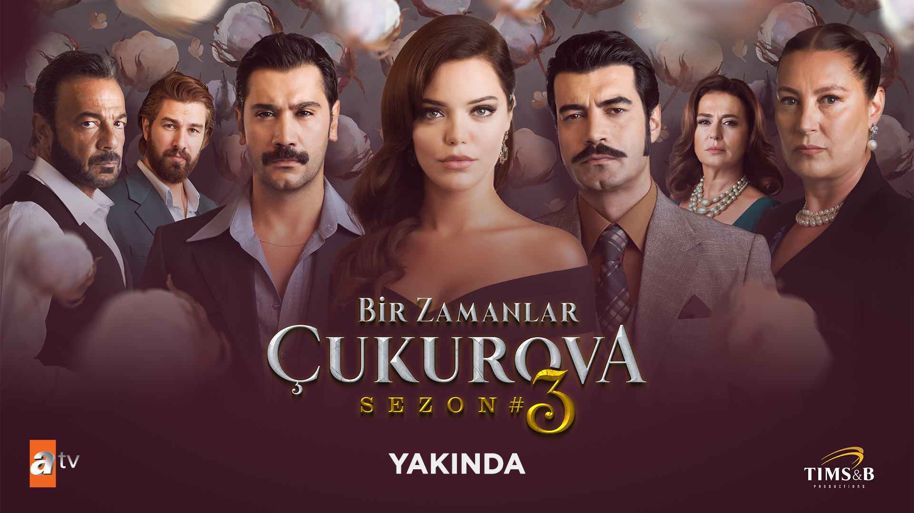

Bir Zamanlar Çukurova, Tims&B Productions imzalı, ilk bölümü 13 Eylül 2018 tarihinde yayınlanan, yönetmenliğini Murat Saraçoğlu ve Evren Karabıyık Günaydın[1]'ın üstlendiği, senaryosunu ise Yıldız Tunç, Atilla Özel, Ayça Üzüm ve Selena Çağlayan'ın birlikte kaleme aldıkları Türk yapımı aşk, dram, aksiyon ve tarihi türdeki televizyon dizisi. 4 sezondan oluşan dizi, 16 Haziran 2022 tarihinde yayımlanan 141. bölümü ile final yaparak sona erdi.
